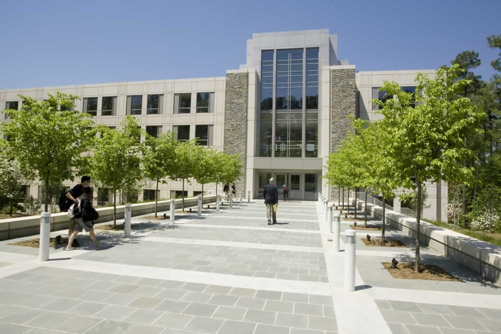
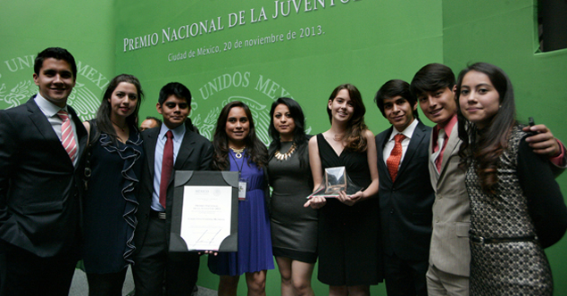

Marketing Intelligence: Driving Engagement Strategy for Duke Programs

The Fuqua Marketing Intelligence team, responsible for advising program leadership, was constrained by the limits of the platform. While survey data from EMBA students was rich, the team lacked the tools to:
• Analyze thousands of open-text responses beyond surface-level themes
• Build dynamic cross-tabs across cohorts without hours of manual work
• Run advanced statistical tests to identify why satisfaction was changing, not just what scores looked like
I designed and delivered an analytical layer by:
• Building a Python pipeline to clean, code, and model survey data, isolating the drivers of engagement.
• Developing an interactive, self-service dashboard that allowed leadership to cross-tabulate by cohort, topic, and metric in real time, using Python, Dash and Plotly, without expensive BI licenses.

Python
Pandas
Plotly
Impact
• Strategic Insight: Identified the top drivers of dissatisfaction. Program leadership acted on these.
• Efficiency: Cut turnaround time for complex ad-hoc requests from days to minutes.
• Capability Building: Extended the life of the school’s investment by giving the team a maintainable Python-based solution they now use independently.
Volunteering with UP and Cuenta Mundos
Throughout my life, I’ve had the opportunity to collaborate with various groups in volunteer activities: collecting Tetra Pak containers to build houses, supporting children in foster homes, and gathering supplies for those affected by the 2017 earthquake in Mexico City. However, my two greatest passions have always been related to education.
While studying at Universidad Panamericana, I had the chance to tutor middle school students in mathematics, algebra, and geometry, students who were struggling with these subjects. I’ve always disagreed with the notion that math is only for those who are “naturally talented” at it, and the students I worked with are proof that this isn't true. Many of them, who were at risk of failing, were able to catch up and even improve their relationship with the subject.
When I was a bit younger, I had the opportunity to lead Cuenta Mundos, a youth-led organization in Oaxaca dedicated to increasing literacy rates in the state by fostering a love of reading among children through playful, engaging activities. The work I carried out alongside my friends, with the support of Professor Enriqueta Pérez, earned us the National Youth Award, the highest honor granted by the Mexican government to young people for their social contributions.

Music all the way...
I've always had a passion for music, and even today, I love spending my free time singing or playing the guitar. That’s how Caminos Cruzados was born, a project where I could explore my musical and production skills, and over the years, build a community of 50,000 people interested in the project. It also gave me the chance to compose my own songs and upload some of my recordings to Spotify.
Although I haven’t been able to record or share as much content lately as I’d like, I would never say this project is over. It’s one of those creative outlets you always return to... with fresh ideas.


Experience
The Fuqua School of Business
Marketing Intelligence Consultant
Jul 2025 – Aug 2025
Soho Squared - InMoment
Customer Experience & Data Analytics
Oct 2022 – Jun 2024
Colgate-Palmolive
Product Launch & Operations
Apr 2021 – Apr 2022
Llantitec Tire Distributor
Pricing & Operations Strategy Intern
Jun 2020 — Dec 2020
Education
Duke University
Master of Science in Business Analytics
Graduated May 2025
Universidad Panamericana
Bachelor of Business Administration
Graduated December 2022
About Me
Volunteering
Initiatives to increase children's literacy rates in Oaxaca.
Member of QueParió!
Comedy YouTube channel with over 3M subscribers.
Founder of Caminos Cruzados
Personal music project with over 50K followers.
Technical Skills
Core Analyst
SQL • Excel (VBA, Pivots) • Tableau/Power BI • KPI design • A/B testing • Requirements
Automation
Python (Pandas/NumPy) • ETL • Data quality
Communication
Stakeholder mgmt • Data storytelling • Exec dashboards
Machine Learning & Modeling
Linear Regression • Logistic Regression • Neural Networks (CNNs, RNNs, LLMs) • Random Forest • K-means • PCA • A/B Testing • LLM prompts (GPT-4, LLaMa, DeepSeek R1)
Other Software & Languages
HTML • CSS • Google Analytics • Java • Jira